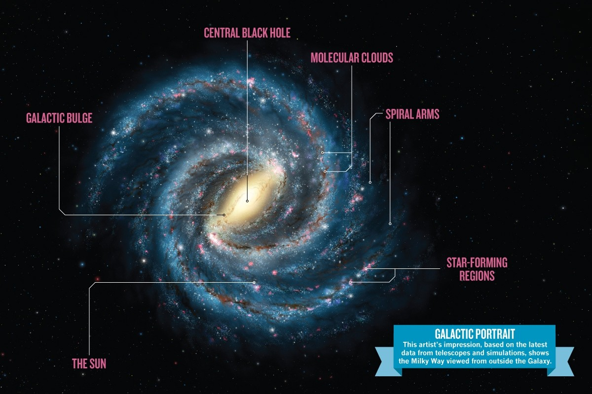

Our galaxy, the Milky Way, is typical: it has hundreds of billions of stars, enough gas and dust to make billions more stars, and at least ten times as much dark matter as all the stars and gas put together. And it’s all held together by gravity.
Like more than two-thirds of the known galaxies, the Milky Way has a spiral shape. At the center of the spiral, a lot of energy and, occasionally, vivid flares are being generated. Based on the immense gravity that would be required to explain the movement of stars and the energy expelled, the astronomers conclude that the center of the Milky Way is a supermassive black hole.
Other galaxies have elliptical shapes, and a few have unusual shapes like toothpicks or rings. The Hubble Ultra Deep Field (HUDF) shows this diversity. Hubble observed a tiny patch of sky (one-tenth the diameter of the moon) for one million seconds (11.6 days) and found approximately 10,000 galaxies, of all sizes, shapes, and colors. From the ground, we see very little in this spot, which is in the constellation Fornax.